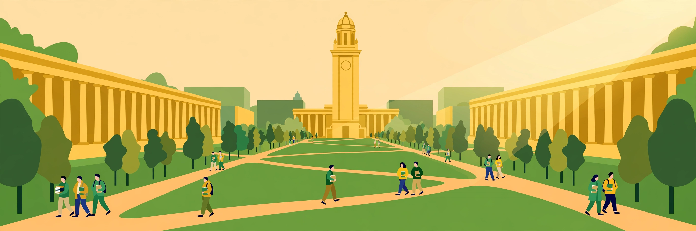

Welcome to the Grand Campus — eleven colleges, one green, and every course within walking distance.
Meet Uma the Owl, the mascot of this world.
Signature University is a free online university by Justin Addam Higgins, with original course material written for this university. It holds 3,850 courses across 11 colleges, from level 101 to level 601.
Two working tools, right here on the page. Each one says what it does and what it cannot do. Neither tool reaches the live web, and neither one needs a key.
Enter a course code from the 24-course sample on this page to get its title, college, and level.
Code:
Enter a college key to get its name, its course count, and its first and last course IDs.
College:
Designs, printables, and demos — free, downloadable, usable on the page. Every product is labeled Signature or Fun. Nothing here is for sale.
A printable planner for one term: spaces for five courses, their codes, and their colleges.
Making: print the printable file, write in five real course codes from the catalog, and plan the term week by week.
A poster of the Grand Campus green: the clock tower, the colonnades, and the tree-lined paths.
Making: print the printable file and pin it up. The paths are drawings, not a map to walk by.
A paper graduation cap to fold and wear for a study party.
Making: print the printable file on card, cut along the lines, fold the cap, and tape the tabs.
Download all product lines as a printable (text)
Uma the Owl once taught a whole term in a single afternoon, then asked for the next term. There is always another college. (Fun — a made-up tale, not a record.)